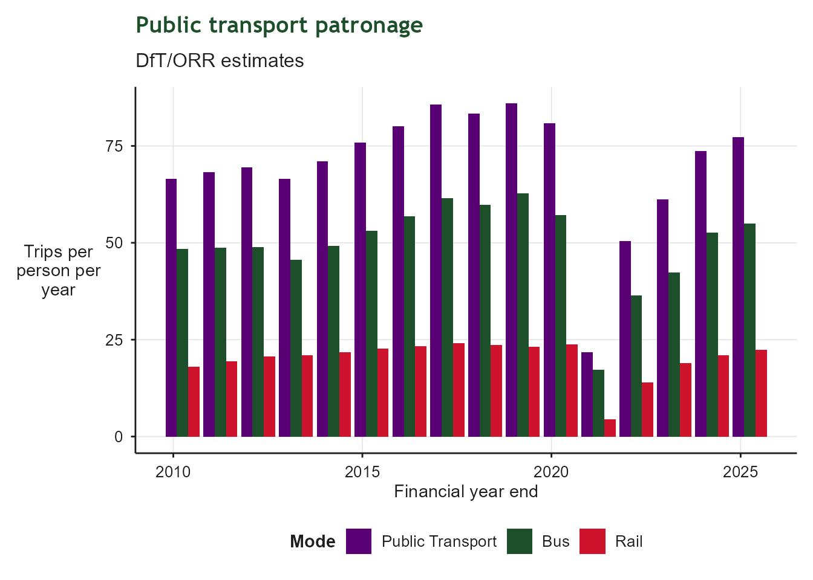
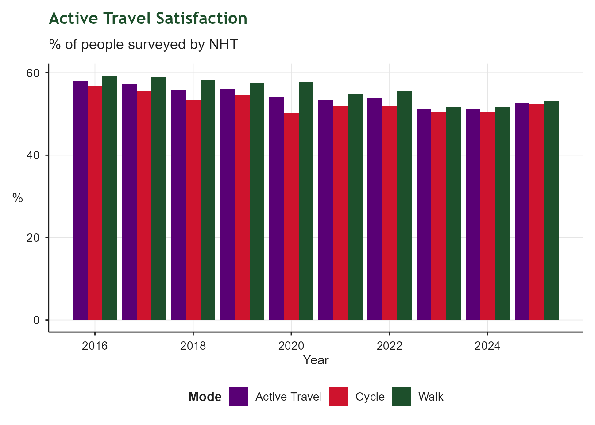

| Transport: Indicator Summary | ||||
| Indicator | From | To | Latest value | Units |
|---|---|---|---|---|
| Bus and rail trips | 2024-04-01 | 2025-03-31 | 77 | Trips per person |
| Bus satisfaction | 2025-01-01 | 2025-12-31 | 82 | % |
| Bus - Satisfaction with Value for money | 2025-01-01 | 2025-12-31 | 49 | % |
| Proportion of adults who walk or cycle for travel purposes at least twice in the past 28 days | 2024-04-01 | 2025-03-31 | 46 | % |
| Active travel satisfaction | 2025-01-01 | 2025-12-31 | 53 | % |
| E-bike hire and E-scooter hire usage | 2026-01-01 | 2026-12-31 | 1,789,307 | Trips |
| Public transport connectivity score to key services (education, employment, health, retail) | 2025-01-01 | 2025-12-31 | 6,550 | Score |
| Proportion of population within 30 minutes of core employment zone by public transport or active travel | 2025-01-01 | 2025-12-31 | 69 | % |
| Mode share for all journeys | 2023-01-01 | 2024-12-31 | 49 | % |
2 Public Transport Connectivity
Connecting the region through public transport & active travel
2.1 Context
This chapter tracks regional indicators related to the West of England’s transport network. It includes indicators related to usage, satisfaction and connectivity. Indicators relating to carbon emissions can be found in the green jobs and growth indicator summary.
These indicators will provide the context and framework for the next update of our Joint Local Transport Plan
2.2 Public Transport Trips
| Bus and Rail Trips | |
| DfT/ORR data | |
| Latest value | 77 Trips per person (2025-03-31) |
| Previous value | 74 Trips per person (2024-03-31) |
| Change vs previous | ↑ +4.9% |
| First value | 67 Trips per person (2010-03-31) |
| Change since first | ↑ +16.1% |
| Observations | 16 |
| Trend | |
| Last updated | 2026-08-03 |
Overview
Public transport patronage is influenced by the size of the population, the mode of transport people choose to make trips (modal share) and the type/frequency of trips people choose to make. Increased trips are usually made as the public transport network expands i.e. as bus or rail services increase in frequency, extend their opening hours, or are extended into new areas. We can also increase trips on the existing network by removing barriers such as cost, poor disabled access or poor access to information. Changes to patronage are also affected by the opening or closing of facilities (e.g. shops or employment sites), societal changes (such as increased homeworking, online shopping or changing leisure habits), household car availability and the relative attractiveness of car travel.
This indicator shows the trips per person per year, so that the effects of population growth are removed. Higher trips per person can increase revenue, making the system more financially self-sustaining. Higher public transport patronage (when people switch from car travel) is also a key factor in reducing carbon emissions, improving health and reducing congestion, which makes the region more attractive to investment.
This indicator uses bus data from DfT which allows comparisons with trends in other areas. Locally collected data allows more granular analysis over shorter time periods and smaller geographical areas, but historic data may not be available before 2019.

2.3 Bus Satisfaction
| Bus Satisfaction | |
| % of bus users satisfied | |
| Latest value | 82% (2025-12-31) |
| Previous value | 81% (2024-12-31) |
| Change vs previous | ↑ +1.0 ppt |
| First value | 77% (2023-12-31) |
| Change since first | ↑ +5.0 ppt |
| Observations | 3 |
| Trend | |
| Last updated | 2026-08-03 |
Overview
Bus satisfaction is measured by surveys carried out by Transport Focus on buses and at bus stops. Bus satisfaction is usually influenced by a number of factors including bus punctuality/reliability, journey times, bus frequency, the price paid for the journey, the quality of the bus stop and the environment on the bus.

2.4 Bus - Satisfaction with Value for Money
| Bus satisfaction with Value for Money | |
| % of bus users satisfied | |
| Latest value | 49% (2025-12-31) |
| Previous value | 60% (2024-12-31) |
| Change vs previous | ↓ -11.0 ppt |
| First value | 55% (2023-12-31) |
| Change since first | ↓ -6.0 ppt |
| Observations | 3 |
| Trend | |
| Last updated | 2026-08-03 |
Overview
Satisfaction with Value for Money can be influenced by the price paid for the ticket and the quality of service received in return. It may also be affected by general economic conditions and household income.
This is measured in surveys to fare-paying customers carried out by Transport Focus - it does not include people using concessionary passes.

2.5 Active Travel participation rates
| Active Travel Participation Rates | |
| % participating at least twice in the past 28 days | |
| Latest value | 46% (2025-03-31) |
| Previous value | 48% (2024-03-31) |
| Change vs previous | ↓ -2.2 ppt |
| First value | 50% (2016-03-31) |
| Change since first | ↓ -3.4 ppt |
| Observations | 10 |
| Trend | |
| Last updated | 2026-08-03 |
Overview
Active travel participation rates show the average of walking participation and cycling participation at least twice in the past 28 days in a survey in November. This may not reflect where there are changes in the number of people walking or cycling more frequently such as regular commuters. An active travel index based on counts of people walking and cycling will give a better indication of whether active travel is increasing or decreasing.
Walking and cycling rates are influenced by the quality of walking and cycling routes and facilities such as cycle parking and public toilets, household car availability and the relative attractiveness of car travel, the opening or closing of facilities (e.g. shops or employment sites), and societal changes (such as increased homeworking, online shopping or changing leisure habits).
Higher active travel participation (when people switch from car travel) is a key factor in reducing carbon emissions, improving health and reducing congestion, which makes the region more attractive to investment.

2.6 Active Travel Satisfaction
| Active Travel Satisfaction | |
| % of people surveyed by NHT | |
| Latest value | 53% (2025-12-31) |
| Previous value | 51% (2024-12-31) |
| Change vs previous | ↑ +1.6 ppt |
| First value | 58% (2016-12-31) |
| Change since first | ↓ -5.2 ppt |
| Observations | 10 |
| Trend | |
| Last updated | 2026-08-03 |
Overview
Active Travel satisfaction is an average of satisfaction with pavements and footpaths, and satisfaction with cycle routes and facilities. It is measured by the NHT Public Satisfaction survey. It is a measure of the general public’s satisfaction rather than people who regularly walk or cycle.
Satisfaction with cycle routes and facilities may be influenced by the quality of routes in general (safety, directness, coherence, attractiveness, comfort), cycle parking availability and quality, availability of information about routes, and other factors such as familiarity with cycling. The volume and speed of traffic is a major inluence: traffic-free routes are strongly preferred. Satisfaction with pavements and footpaths may be influenced by the quality of the routes in general, but this indicator may not fully reflect satisfaction with how easy or attractive the region is for walking as the survey does not ask about a wider range of factors such as shade, the presence of resting places (benches) or public toilets.

2.7 E-bike and E-scooter usage
| E-bike and E-scooter Usage | |
| Operated by Voi (Oct 24 - Aug 23), Tier (Sept 23- Aug 24), Dott (Sept 24 - present) | |
| Latest value | 1,789,307 Trips (2026-12-31) |
| Previous value | 3,319,165 Trips (2025-12-31) |
| Change vs previous | ↓ -46.1% |
| First value | 67,220 Trips (2020-12-31) |
| Change since first | ↑ +2561.9% |
| Observations | 7 |
| Trend | |
| Last updated | 2026-08-03 |
Overview
E-bike hire and e-scooter hire give people more options for how they travel. These trips may be trips that would not have been made at all previously, or they may transfer from existing active travel, bus or car usage. E-bike hire and e-bike usage contribute to overall walking and cycling participation rates.

2.8 Public Transport Connectivity
| Public Transport Connectivity | |
| Peak hour journey times to education, employment, health and retail | |
| Latest value | 6,550 Score (2025-12-31) |
| Previous value | 6,511 Score (2024-12-31) |
| Change vs previous | ↑ +0.6% |
| First value | 7,060 Score (2019-12-31) |
| Change since first | ↓ -7.2% |
| Observations | 5 |
| Trend | |
| Last updated | 2026-08-03 |
Overview
Public transport connectivity has been modelled using the Combined Authority’s Connectivity Tool. It models journey times to key education, employment, health and retail amenities.
Connectivity may change due to changes in public transport service timetables, new infrastructure or new facilities being built. Public transport services are more financially viable in areas with denser population, so these areas are more likely to see improvements in connectivity. Areas with an ageing population, where people make less trips and are more likely to own cars, or where facilities close down, may see reductions in connectivity. It is often easier to increase patronage in areas of good connectivity by measures such as making public transport more affordable, extending service opening hours or improving journey planning information.

2.9 Journey Times to Employment
| Population within 30 minutes of major employment sites | |
| by bus, train, walking or cycling | |
| Latest value | 69% (2025-12-31) |
| Previous value | 69% (2024-12-31) |
| Change vs previous | ↓ -0.3 ppt |
| First value | 71% (2019-12-31) |
| Change since first | ↓ -3.0 ppt |
| Observations | 5 |
| Trend | |
| Last updated | 2026-08-03 |
Overview
Transport connectivity has been modelled using the Combined Authority’s Connectivity Tool to employment sites with over 5000 employees. This metric is influenced by population density and the provision of public transport and active travel networks.
When people make choices about their transport, journey time reliability is often more important than small improvements to journey time. Congestion is a key factor that increases journey times and reduces reliability.
This indicator can be improved by increasing housing density in areas of good connectivity, reducing congestion, building more dedicated public transport routes, and building more direct active travel routes.